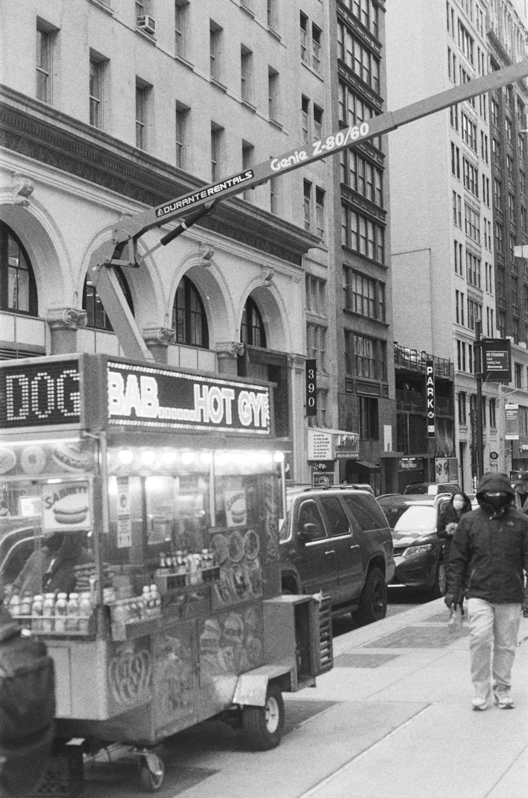

01
Sev
ern
Sis
ters
the usual january walk taken post the over-endulgance of christmas and attempts to reach a month sober - this day was the day it ended.
The Annual Sobriety Stroll ©late jan 2025
02
Sri
Lan
Ka
on a winters night in the usual early hours of the morning with uni friends, a conversation was had. surprisingly, flights to sri lanka were booked the next morning.
we spent five days - an intented two - in hiriketya, a small surf town on the south coast. it was a trip of contrasts - the lush green countryside and tea plantations, the chaotic, noisy towns and cities.
03
Wim
bledon
tennis is a sport demanding precision and split-second timing as players
track the bright yellow ball flying across the net with incredible speed
while maintaining perfect form and concentration throughout each intense
rally where every serve and return requires flawless execution and mental
fortitude as competitors push their physical limits while reading their
opponent's strategy and anticipating every bounce and spin that could
determine the outcome of crucial points in this beautiful game of angles
and athleticism that has captivated audiences worldwide with its
combination of power grace and tactical brilliance on every court
some text about ricky winning wimbledon and we all went to wimbledon to see it.
04

New
York
City
a trip that had been prommised for as long as i could remember. in february of 2022, despite our now expired stand-by privaledges, 5 hour plane delay and lost tickets for the comedy club in SoHo that night, we were finally on our way to new york.
on a sunday morning we decided that a day together, avoiding the usual slightly chaotic logistics of a 6 person onterage, would be a good idea. we got the metro to brooklyn, explored round the bridge and then headed to williamsburg. we went to some vintage shops, had an explore, drank beer and played pool - this was my favorite day.